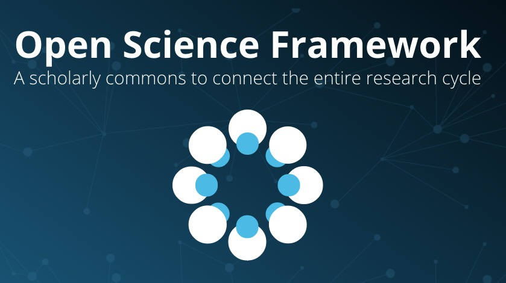
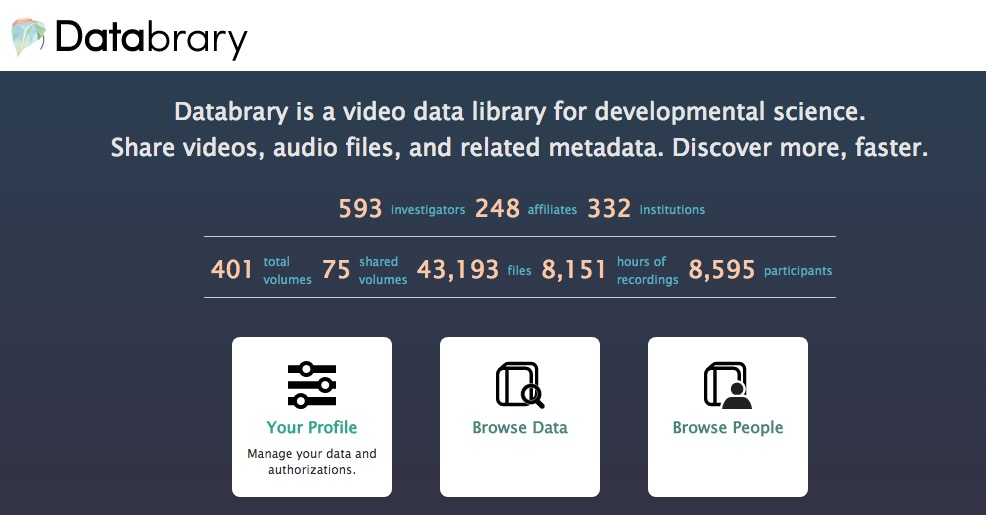

Beyond physics envy: Toward a databservatory for human behavior
Rick O. Gilmore
2017-07-31 10:57:40
Psychology is harder than physics


What would a data observatory for human behavior look like?
Combine data from diverse domains
Link measures across people
Enable web-based data visualization, analysis

Support search, filtering by personal characteristics
Encourage self/active curation of data, materials

Provide consistent, clear sharing permissions structure

Progress
| Example | Multi-measure | Indiv link/search | Visualize | Self-curate | Permissions |
|---|---|---|---|---|---|
| Databrary | ✔ | ✔ | tabular | ✔ | ✔ |
| Human Proj | ✔ | ✔ | ? | ? | ✔ |
| ICPSR | ✔ | ? | ✔ | ? | ✔ |
| Neurosynth | fMRI BOLD | group data | ✔ | public | NA |
| OpenNeuro | ✔ | ? | ✔ | ✔ | public |
| Open Humans | ✔ | ✔ | ? | ? | ✔ |
| OSF | ✔ | ✔ | public | ||
| WordBank | M-CDI | group metadata | ✔ | ? | public |
Barriers
.jpg)


Metadata as “mortar”

Let’s build a Databservatory for human behavior
It should…
- Store & share data & materials
- Link data across studies, measures
- Link across group characteristics, individuals
- Enable searching & filtering by individual characteristics, tasks, settings
- Support web-based data analysis, visualization; open API
- Provide consistent framework for ethical data sharing
- Enable data aggregation, cloning, provenance tracking
- Support self/active curation
- Link to publications
- …

Acknowledgments


Stack
This talk was produced on 2017-07-31 10:57:40 in RStudio 1.0.143 using R Markdown and the reveal.JS framework. The code and materials used to generate the slides may be found at https://github.com/gilmore-lab/sips-2017-databservatory/. Information about the R Session that produced the code is as follows:
## R version 3.4.0 (2017-04-21)
## Platform: x86_64-apple-darwin15.6.0 (64-bit)
## Running under: macOS Sierra 10.12.5
##
## Matrix products: default
## BLAS: /System/Library/Frameworks/Accelerate.framework/Versions/A/Frameworks/vecLib.framework/Versions/A/libBLAS.dylib
## LAPACK: /Library/Frameworks/R.framework/Versions/3.4/Resources/lib/libRlapack.dylib
##
## locale:
## [1] en_US.UTF-8/en_US.UTF-8/en_US.UTF-8/C/en_US.UTF-8/en_US.UTF-8
##
## attached base packages:
## [1] stats graphics grDevices utils datasets methods base
##
## loaded via a namespace (and not attached):
## [1] compiler_3.4.0 backports_1.0.5 magrittr_1.5 rprojroot_1.2
## [5] htmltools_0.3.6 tools_3.4.0 revealjs_0.9 yaml_2.1.14
## [9] Rcpp_0.12.10 stringi_1.1.5 rmarkdown_1.5 knitr_1.16.4
## [13] stringr_1.2.0 digest_0.6.12 evaluate_0.10